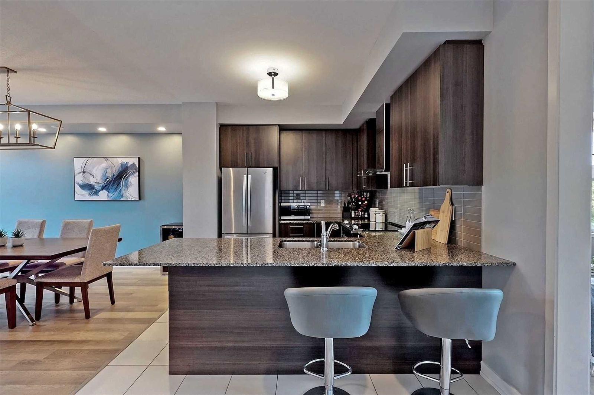
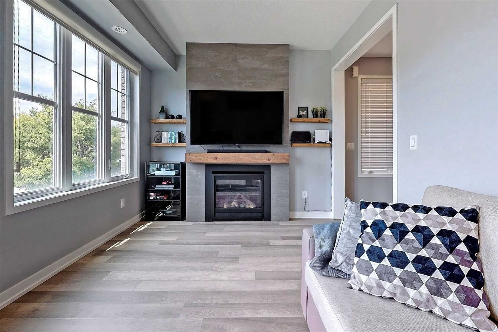

大約費用
廚房裝修費用通常分為三個等級:局部翻新約 $10,000–$25,000,中檔翻新(更換櫥櫃並調整格局)約 $30,000–$75,000,全屋拆除重建則從 $75,000 起。
本地提示:列治文山鎮對管道遷移、超出簡單更換範圍的電力工程,以及結構性改動要求申請許可證 — 請將檢驗時間納入您的裝修規劃。
發布您的廚房裝修項目,免費配對經認證的列治文山本地師傅 — 大約一分鐘完成。
廚房裝修費用通常分為三個等級:局部翻新約 $10,000–$25,000,中檔翻新(更換櫥櫃並調整格局)約 $30,000–$75,000,全屋拆除重建則從 $75,000 起。


「我們Mill Pond附近的房子是80年代建的 — 配對到的師傅完全清楚舊電線該怎麼處理。」
列治文山的房屋以80、90年代Bayview Hill及Mill Pond一帶的成熟社區為主,加上Oak Ridges一帶較新的建案。這裡的舊屋通常需要在展開任何美觀裝修前,先將電線、水管或間隔更新至現行標準。
只有在遷移管道、燃氣管線,或進行拆牆等結構工程時才需要 — 一般的美觀升級(櫥櫃、檯面、瓷磚)通常不需要。